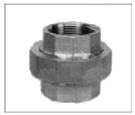
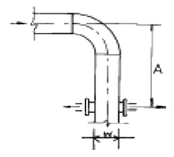

건축설비산업기사 (2005-03-06 기출문제)
1과목: 건축일반
1. 나무구조의 가새에 대한 기술 중 옳지 않은 것은?
- 목조 벽체를 수평력에 견디게 하고 안정한 구조로 하기 위한 것이다.
- 가새의 경사는 45°에 가까울수록 유리하다.
- 가새에는 인장응력이 발생하지 않으며 압축응력만이 발생한다.
- 가새는 따내거나 결손시켜 내력상 지장을 주어서는 안 된다.
(정답률: 50%)

2. 초등학교 계획에 관한 설명 중 옳지 않은 것은?
- 저학년은 직접외부와 연결되도록 1층에 배치한다.
- 교사의 배치형태 중 분산병렬형은 일종의 핑거 플랜으로 일조ㆍ통풍 등 교실의 환경조건이 균등하다.
- 저학년은 따로 분리하는 것보다 고학년과 상호접촉이 용이하도록 배치한다.
- 동 학년의 학급은 근접되어 동일한 층에 위치하도록 배치한다.
(정답률: 80%)
3. 주로 상업상, 사무상의 단기체재 여행자를 위한 호텔로서, 도시의 가장 번화한 교통의 중심에 위치하는 것은?
- 리조트 호텔
- 커머셜 호텔
- 클럽 하우스
- 아파트먼트 호텔
(정답률: 75%)
4. 다음 중 목조벽체의 구성재와 가장 관계가 먼 것은?
- 허리잡이
- 샛기둥
- 인방
- 장선
(정답률: 알수없음)
5. 학교의 운영방식에 관한 기술 중 가장 옳지 않은 것은?
- 종합교실형(U형)은 학생의 이동이 없으며 초등학교 저학년에 권장할 만한 형이다.
- 교과교실형(V형)은 일반교실이 각 학년에 하나씩 할당되고, 그 외에 특별교실을 갖는다.
- 달톤형(D형)은 학급, 학생 구분을 없애고 학생들은 각자의 능력에 맞게 교과를 선택하고 일정한 교과가 끝나면 졸업하는 방식이다.
- 플래툰형(P형)은 전학급을 2분단으로 하고, 한 쪽이 일반교실을 사용할 때 다른 분단은 특별교실을 사용한다.
(정답률: 69%)
6. 다음 중 오피스랜드스케이프 계획에 대한 설명으로 옳지 않은 것은?
- 공간을 절약할 수 있다.
- 작업장(work place)의 집단을 자유롭게 그루핑하여 불규칙한 평면을 유도한다.
- 커뮤니케이션의 융통성이 좋고, 장애요인이 거의 없다.
- 소음이 없으며 프라이버시가 양호하다.
(정답률: 73%)
7. 다음 중 홈을 두 줄 파서 문 두짝을 달고 문 한 짝을 다른 한 짝 옆에 밀어 붙이는 구조로 된 것은?
- 여닫이문
- 자재문
- 미서기문
- 접문
(정답률: 알수없음)
8. 곡면판이 지니는 역학적 특성을 응용한 구조로서 외력은 주로 판의 면내력으로 전달되기 때문에 경량이고 내력이 큰 구조물을 구성할 수 있는 구조는?
- 보강 블록조
- 철골 구조
- 셀(shell) 구조
- 벽식 구조
(정답률: 알수없음)
9. 다음의 각종 호텔에 관한 설명 중 옳은 것은?
- 호텔 연면적에 대한 숙박부분의 비율이 가장 높은 것은 리조트호텔이다.
- 레지덴셜호텔은 손님이 장기간 체재하는데 적합한 호텔로서, 각 객실에는 주방설비를 갖추고 있다.
- 아파트먼트 호텔은 단기체재자를 위한 호텔로서 교통기관의 발착지점에 위치한다.
- 클럽하우스는 스포츠시설을 위주로 이용되는 숙박시설을 갖추고 있다.
(정답률: 82%)
10. 아파트의 각 평면형식에 대한 설명 중 옳지 않은 것은?
- 계단실형은 통행부 면적이 적으므로 건물의 이용도가 높다.
- 편복도형은 저층 아파트에 적합하며 채광 및 통풍이 좋지 않다.
- 중복도형은 독신자 아파트에 많이 이용되며 프라이버시가 좋지 않다.
- 집중형은 부지의 이용율이 높으며 고도의 설비를 필요로 한다.
(정답률: 85%)
11. 보강 콘크리트 블록조에 대한 설명으로 잘못된 것은?
- 벽량은 그 층의 바닥면적에 대하여 15cm/m2 이상으로 한다.
- 내력벽으로 둘러싸인 부분의 바닥면적은 60m2을 넘을 수 없다.
- 테두리보는 블록벽체를 일체식 벽면으로 만들기 위하여 설치한다.
- 부축벽ㆍ붙임벽 등의 길이는 벽높이의 1/3 이상으로 한다.
(정답률: 알수없음)
12. 철골 기둥의 하중을 기초로 전달시키는 기능을 하는 부재는?
- 데크 플레이트(deck plate).
- 베이스 플레이트(base plate)
- 스티프너(stiffner)
- 플랜지(flange)
(정답률: 54%)
13. 다음의 주택계획에 관한 설명 중 옳지 않은 것은?
- 주택의 규모가 적을 경우 복도를 설치하는 것은 부적합하다.
- 소규모주택에서 부엌의 일부에 식탁을 놓아 사용하는 식당의 형태를 리빙다이닝이라 한다.
- 부엌의 평면형 중 일렬형은 동선과 배치가 간단하며 소규모 주택에 적합하다.
- 침실에서 침대는 머리쪽에 창을 두지 않는 것이 좋다.
(정답률: 알수없음)
14. 사무소의 층고에 대한 설명 중 잘못된 것은?
- 일반적으로 지하층은 별로 중요한 실이 설치되지 않기 때문에 240~270cm 정도가 많다.
- 일반적으로 1층 층고는 기준층의 층고보다 높다.
- 기준층은 조명기구 매입공간, 덕트 은폐공간을 고려하여 층고를 결정하는 것이 좋다.
- 최상층은 옥상으로부터의 단열과 옥상 슬래브의 물매를 감추기 위한 2중 천장을 고려하여 층고를 결정할 필요가 있다.
(정답률: 70%)
15. 학교 강당 및 실내체육관의 계획에 대한 설명 중 옳지 않은 것은?
- 강당 겸 체육관은 지역 커뮤니티의 시설로 이용될 수 있도록 고려한다.
- 강당과 체육관을 겸용할 경우 체육관의 목적으로 치중하는 것이 좋다.
- 강당은 반드시 전교생을 수용할 수 있는 크기 이상으로 계획하여야 한다.
- 체육관은 농구 코트를 둘 수 있는 크기가 필요하다.
(정답률: 알수없음)
16. 연약지반에서 부동침하를 방지하는 대책으로 부적당한 것은?
- 건물의 경량화
- 구조강성을 높일 것
- 이웃 건물과의 거리를 가깝게 할 것
- 건물의 중량분배를 고려할 것
(정답률: 알수없음)
17. 다음 중 벽돌조에서 공간쌓기의 효과와 가장 관계가 먼 것은?
- 방음
- 방진
- 방서
- 방습
(정답률: 알수없음)
18. 다음 중 판보에서 웨브에 스티프너를 설치하는 가장 주된 목적은?
- 웨브판의 좌굴 방지
- 플랜지의 처짐 방지
- 플랜지의 부식 방지
- 철근의 배근 용이
(정답률: 알수없음)
19. 상점계획에서 쇼윈도 유리면의 반사방지 방법으로 옳지 않은 것은?
- 내부조도를 낮춘다.
- 차양을 설치하여 외부에 그늘을 준다.
- 유리를 경사지게 설치한다.
- 곡면유리를 사용한다.
(정답률: 82%)
20. 목조 반자틀의 각부재를 상부에서 하부로 나열한 것 중에서 바르게 된 것은?
- 달대받이-달대-반자틀-반자틀받이
- 달대받이-반자틀-달대-반자틀받이
- 반자틀받이-달대-달대받이-반자틀
- 달대받이-달대-반자틀받이-반자틀
(정답률: 70%)
2과목: 위생설비
21. 다음 중 각개통기관의 통기취출위치로 적당한 것은?
- 기구트랩웨어로부터 관경의 0.5배 이상 떨어진 위치
- 기구트랩웨어로부터 관경의 1배 이상 떨어진 위치
- 기구트랩웨어로부터 관경의 1.5배 이상 떨어진 위치
- 기구트랩웨어로부터 관경의 2배 이상 떨어진 위치
(정답률: 알수없음)
22. 급탕배관에서 강관인 경우 신축이음은 얼마마다 1개씩 설치하여야 하는가?
- 60m
- 50m
- 40m
- 30m
(정답률: 57%)
23. 배관용으로 사용되는 관에 대한 설명 중 옳지 않은 것은?
- 염화비닐관은 내화성은 높지만, 산·알칼리에 대한 내식성이 없다.
- 주철관은 인장강도, 휨강도는 적으나 압축강도는 크다.
- 동 및 동합금관은 내식성이 좋고 마찰저항이 작다.
- 스테인레스 강관은 녹에 의한 유량저하가 없으며, 적수나 청수의 염려가 없다.
(정답률: 알수없음)
24. 흡입 실양정 3m, 토출 실양정 15m, 관내 마찰손실이 2mAq일 때 실양정은?
- 15m
- 16m
- 18m
- 20m
(정답률: 알수없음)
25. 200mm 급수관에 2m/s의 유속으로 양수하면 분당 양수량은 얼마인가?
- 약 2.0m3
- 약 2.5m3
- 약 3.8m3
- 약 4.0m3
(정답률: 알수없음)
26. 압력에 관한 설명 중 옳은 것은?
- 수압 7㎏/㎝2를 수두로 환산하면 7m이다.
- 수은주 100㎜는 0.1㎏/㎝2이다.
- 100㎜Aq는 1㎏/㎝2의 압력이다.
- 압력의 표시 방법에는 완전진공을 기준으로 한 절대압력과 대기압을 기준으로 한 게이지압력이 있다.
(정답률: 알수없음)
27. 포집기(intercepter) 중 여러 장의 격벽을 설치하여 유지분을 상부로 부상 고형화시킴과 동시에 물보다 비중이 무거운 것을 바닥에 침전시키는 구조로 이루어진 것은?
- 가솔린 포집기
- 그리스 포집기
- 플라스터 포집기
- 헤어 포집기
(정답률: 알수없음)
28. 고가수조식 급수법에서 배관계통을 가장 바르게 나타낸 것은?
- 저수조→양수펌프→양수관→고가수조→급수관→수도꼭지
- 저수조→양수관→양수펌프→급수관→고가수조→수도꼭지
- 저수조→양수펌프→급수관→고가수조→양수관→수도꼭지
- 저수조→급수관→양수펌프→양수관→고가수조→수도꼭지
(정답률: 알수없음)
29. 다음 급수방식 중 위생성 및 유지, 관리 측면에서 가장 바람직한 방식으로 정전으로 인한 단수의 염려 없는 것은?
- 압력수조방식
- 펌프직송방식
- 고가수조방식
- 수도직결방식
(정답률: 알수없음)
30. 다음의 소화설비에 대한 설명 중 옳지 않은 것은?
- 드렌쳐(Drencher)설비는 인접건물로부터의 연소방지를 주목적으로 한다.
- 건식 스프링클러는 한랭지 등 동결의 염려가 있는 곳에서 사용된다.
- 스프링클러의 디플렉터(deflector)는 방수구에서 유출되는 물을 세분시키는 작용을 하는 부분을 말한다.
- 연결송수관 설비의 주배관의 구경은 65mm 이상으로 하며 옥내소화전용 배관과 겸용하여서는 안된다.
(정답률: 알수없음)
31. 다음 통기관의 최소관경에 대한 설명 중 옳지 않은 것은?
- 통기관의 최소관경은 45mm로 한다.
- 신정통기관의 관경은 배수수직관의 관경보다 작게해서는 안된다.
- 각개통기관의 관경은 그것이 접속되는 배수관 관경의 1/2 이상으로 한다.
- 결합통기관의 관경은 통기수직관과 배수수직관 중 작은쪽 관경 이상으로 한다.
(정답률: 알수없음)
32. 다음 그림의 설비기구에 대한 설명 중 옳은 것은?

- 유니온으로서 배관을 직선접합할 때 사용된다.
- 90˚ 엘보로서 관의 방향변경에 사용된다.
- 부싱으로서 이경관을 접속할 때 사용된다.
- 플렉시블 조인트로서 장비의 진동을 차단할 때 사용된다.
(정답률: 알수없음)
33. 급탕배관의 설계에 관한 설명 중 틀린 것은?
- 상향배관인 경우, 급탕관은 상향구배, 반탕관은 하향구배로 한다.
- 급탕관의 최소관경은 30A이다.
- 대규모 건물에서는 일반적으로 리버스리턴 배관방식을 취한다.
- 관의 신축을 고려하여 배관의 굽힘 부분에는 스위블 이음을 한다.
(정답률: 50%)
34. 급수설비에서 수격작용이 발생되는 원인에 대한 설명 중 가장 적절한 것은?
- 물을 과도하게 사용할 때 발생한다.
- 급수관내의 유속이 느릴 때 주로 발생한다.
- 급수관의 지름이 클 때 주로 발생한다.
- 급수관내에서 물의 흐름이 갑자기 정지할 때 발생한다.
(정답률: 알수없음)
35. 급탕설비에 사용하는 순환펌프에 대한 설명 중 옳지 않은 것은?
- 피스톤 펌프와 사류 펌프가 주로 사용된다.
- 소규모 설비에서는 배관도중에 설치하는 라인펌프(line pump)가 사용된다.
- 순환펌프의 수량은 순환관로의 열손실과 급탕관, 반탕관의 온도차로 구한다.
- 순환펌프의 양정이 지나치게 높으면 관내를 진공상태로 만들기 쉽기 때문에 충분히 주의해야 한다.
(정답률: 알수없음)
36. 다음 중 LNG의 주성분은?
- CH4
- C2H6
- C3H8
- C4H8
(정답률: 알수없음)
37. 대변기의 세정방식 중 대변기로의 공급수량이나 압력이 일정하며 양호한 세정효과와 소음이 적어 일반주택에 주로 사용되는 방식은?
- 하이 탱크식
- 로 탱크식
- 사이폰 제트식
- 세정밸브식
(정답률: 알수없음)
38. 배수용 트랩(trap)의 구비조건에 대한 설명 중 옳지 않은 것은?
- 봉수가 파괴되지 않는 구조일 것.
- 배수시에 자기세정이 가능할 것
- 가동부분에 봉수를 형성하고 구조가 복잡할 것
- 내식성이 크고 내구성이 있을 것
(정답률: 알수없음)
39. 캐비테이션을 방지할 수 있는 방법으로 옳은 것은?
- 흡입조건이 나쁜경우는 비속도를 작게 하기 위해 회전수가 큰 펌프를 사용한다.
- 흡수관은 가능한 한 길게 한다.
- 설계상의 펌프 운전범위내에서 항상 유효NPSH가 필요 NPSH보다 크게 되도록 배관계획을 한다.
- 비속도가 작은 와권 펌프에서는 펌프의 최고 효율점보다 큰 유량의 점에서 운전한다.
(정답률: 알수없음)
40. 옥외소화전에서 소방대상물의 각 부분으로부터 1개의 호스접결구까지의 수평거리는 최대 얼마 이하가 되도록 설치해야 하는가?
- 25 m
- 30 m
- 40 m
- 50 m
(정답률: 알수없음)
3과목: 공기조화설비
41. 아래 그림과 같은 덕트의 배치에서 엘보와 취출구간의 이격거리로서 적당한 것은? (단, 엘보는 베인이 없는 것으로 한다.)

- A ≥ 8W
- A ≥ 6W
- A ≥ 4W
- A ≥ 2W
(정답률: 알수없음)
42. 다음 난방방식 중 출입의 빈도가 잦아 틈새바람에 의한 열손실이 비교적 많은 경우의 난방방식으로 적당한 것은?
- 온풍난방
- 온수난방
- 증기난방
- 복사난방
(정답률: 50%)
43. 일반 공기조화용으로 사용되는 흡수식 냉동기의 냉매는 무엇인가?
- LiBr
- 프레온
- 암모니아
- 물
(정답률: 알수없음)
44. 등압법으로 설계할 경우 단일 덕트내에서 많은 풍량이 송풍되면 여러 가지 문제점이 유발될 수 있어 일정풍량이상이면 등속법으로 설계하는데 그 이유로 적당한 것은?
- 소음이 커진다.
- 마찰저항이 커진다
- 덕트길이가 길어진다.
- 부유분진의 비상이 많아 진다.
(정답률: 알수없음)
45. 공기조화설비의 조닝계획에 관한 다음 설명 중 가장 적합한 것은?
- 조닝계획은 별도의 공조계통을 구분하고자 하는 것이다.
- 조닝을 세분화할수록 설비비를 감소시킬 수 있다.
- 조닝을 세분화할수록 에너지소비가 많아진다.
- 조닝계획은 실 사용시간과는 무관하다.
(정답률: 알수없음)
46. 원심송풍기의 회전날개 지름이 900mm일때 송풍기의 번호는 얼마인가?
- #6
- #7
- #8
- #9
(정답률: 알수없음)
47. 공조되는 인접실과 5℃의 온도차가 나는 경우에 벽체를 통한 관류열량을 구하시오. (단, 벽체의 열관류율은 0.5kcal/m2·h·℃이며, 인접실과 접한 벽체의 면적은 300m2이다.)
- 215kcal/h
- 325kcal/h
- 750kcal/h
- 1,500kcal/h
(정답률: 73%)
48. 연료유에 적정량의 물을 연속적으로 첨가하여 연소시키므로써 완전연소를 촉진시키고 공해물질의 발생을 방지하는 집진 방식은?
- 사이클론식
- 물주입식
- 세정식
- 자석식
(정답률: 60%)
49. 습공기 선도상에서 구할 수 없는 습공기의 상태치는?
- 노점온도
- 비체적
- 비열
- 수증기분압
(정답률: 50%)
50. 워터해머의 방지법으로 부적당한 것은?
- 신축곡관을 설치한다.
- 관내 유속을 가급적 느리게 한다.
- 펌프에 플라이 휠을 설치한다.
- 체크밸브를 설치한다.
(정답률: 알수없음)
51. 팽창탱크의 기능을 설명한 것이다. 부적합한 것은?
- 급수를 자동으로 보충해 준다.
- 초과압력에 상당하는 수량을 도피시킨다.
- 개방형 일때는 방열기보다 낮은 곳에 설치한다.
- 배관중에 발생한 공기를 배출시킨다.
(정답률: 알수없음)
52. 다음 중 최대부하를 계산하는 기본 목적으로 부적합한 것은?
- 열원기기의 용량산정
- 각실 또는 존의 송풍량산정
- 냉각코일 또는 가열코일의 용량산정
- 에너지소비량의 예측
(정답률: 알수없음)
53. 냉각수 배관에서 다음 중 어느 값이 커지면 직관부의 마찰손실수두[mAq]가 감소되는가?
- 관 마찰계수
- 길이
- 직경
- 속도
(정답률: 알수없음)
54. 덕트의 치수를 결정하는 방법이 아닌 것은?
- 등속법
- 등온법
- 등마찰법
- 정압 재취득법
(정답률: 40%)
55. 공기조화의 4요소에 속하지 않는 것은?
- 기류
- 습도
- 복사
- 청정도
(정답률: 알수없음)
56. 다음은 설계 외기조건을 선정하기 위한 위험율(T.A.C.)에 대한 설명이다. 맞지 않는 것은?
- 위험율을 크게 잡으면 장치용량도 커진다.
- 위험율 5%는 위험율 2.5% 보다 설계외기 기준 온도를 벗어나는 시간이 2배이다.
- 위험율은 난방 또는 냉방기간의 총 시간에 대한 온도출 현 빈도분포로부터 구한다.
- 요구조건이 엄격한 건물일 수록 위험율은 적게 한다.
(정답률: 59%)
57. 다음 중 가장 성능이 좋은 필터는?
- 충돌 점착식 필터
- 활성탄 필터
- HEPA 필터
- ULPA 필터
(정답률: 알수없음)
58. 흡수식 냉동기의 사이클로서 옳은 것은?
- 증발기 - 재생기 - 흡수기 - 응축기
- 증발기 - 흡수기 - 재생기 - 응축기
- 증발기 - 흡수기 - 응축기 - 재생기
- 흡수기 - 증발기 - 응축기 - 재생기
(정답률: 20%)
59. 풍량 1200m3/min, 전압력 25mmAq인 송풍기의 전동기 출력은 얼마인가? (단, 송풍기의 전압효율은 75%, 전동효율은 95%, 여유계수는 0.15로 한다.)
- 6.5kw
- 7.9kw
- 8.5kw
- 9.1kw
(정답률: 알수없음)
60. 환수주관을 보일러 수면보다 높은 위치에 배관하는 환수 방식은?
- 습식 환수방식
- 강제 순환방식
- 건식 환수방식
- 진공 환수방식
(정답률: 알수없음)
4과목: 건축설비관계법규
61. 비상조명등을 설치하여야 하는 특정소방대상물은 지하층을 포함하는 층수가 5층 이상인 건축물로서 연면적은 얼마 이상인 경우가 해당하는가?
- 1천5백제곱미터
- 2천제곱미터
- 3천제곱미터
- 5천제곱미터
(정답률: 알수없음)
62. 건축관련법령상 건축물의 배관설비에 관한 규정으로 옳지 않은 것은?
- 배관설비를 콘크리트에 묻는 경우 부식의 우려가 있는 재료는 부식방지조치를 할 것
- 승강기의 승강로 안에는 승강기의 운행에 필요한 배관 설비외에 필요한 경우 기타 배관설비를 설치할 것
- 건축물의 주요부분을 관통하여 배관하는 경우에는 구조 내력에 지장이 없도록 할 것
- 압력탱크 및 급탕설비에는 폭발 등의 위험을 막을 수 있는 시설을 설치할 것
(정답률: 알수없음)
63. 소방시설의 종류에서 소화설비가 아닌 것은?
- 옥외소화전설비
- 스프링클러설비
- 연결살수설비
- 옥내소화전설비
(정답률: 알수없음)
64. 판매시설 및 영업시설인 경우 자동화재탐지설비를 설치하여야 하는 연면적 기준은?
- 600m2 이상
- 1,000m2 이상
- 1,500m2 이상
- 2,000m2 이상
(정답률: 알수없음)
65. 중학교 교실의 바닥면적이 80m2일 경우 자연환기 면적은 얼마를 확보해야 하는가?
- 2m2 이상
- 4m2 이상
- 8m2 이상
- 16m2 이상
(정답률: 알수없음)
66. 분뇨를 재활용의 목적으로 1일 몇 kg이상 처리하고자 할 때 시장·군수·구청장에게 신고하여야 하는가?
- 10kg 이상
- 20kg 이상
- 50kg 이상
- 100kg 이상
(정답률: 알수없음)
67. 동일한 사업장에서 배출되는 오수·분뇨 또는 축산폐수를 수질환경보전법에 의한 수질오염방지시설에서 병합 처리하고자 하는 경우에 오수·분뇨 및 축산폐수의 배출량은 폐수배출량의 몇 % 미만이어야 하는가?
- 20 %
- 30 %
- 40 %
- 50 %
(정답률: 37%)
68. 분뇨처리시설의 처리방법과 관련이 없는 것은?
- 호기성 생물학적 방법
- 혐기성 생물학적 방법
- 물리·화학적 방법
- 저장 액비화 방법
(정답률: 60%)
69. 방화관리자를 두어야 하는 특정소방대상물은 연면적이 얼마 이상인 경우가 해당되는가?
- 연면적 1만5천제곱미터 이상인 것
- 연면적 2만제곱미터 이상인 것
- 연면적 2만5천제곱미터 이상인 것
- 연면적 3만제곱미터 이상인 것
(정답률: 50%)
70. 다음 중 옥내소화전설비를 설치하여야 할 소방대상물이 아닌 것은
- 연면적이 3,000m2 이상인 것
- 지하층인 층 중 바닥면적이 600m2 이상인 층이 있는 것은 전층
- 무창층인 층 중 바닥면적이 600m2 이상인 층이 있는 것은 전층
- 층수가 4층 이상인 층 중 바닥면적이 500m2 이상인 층이 있는 것은 전층
(정답률: 31%)
71. 건축법에서 거실 용도에 따른 조도기준으로 옳지 않은 것은?
- 독서 - 150룩스
- 일반사무 - 300룩스
- 수술 - 700룩스
- 오락일반 - 300룩스
(정답률: 55%)
72. 갑종방화문은 한국산업규격이 정하는 바에 의하여 시험한 결과 비차열 성능이 얼마 이상의 시간이 확보되어야 하는가?
- 30분
- 60분
- 90분
- 120분
(정답률: 알수없음)
73. 공동주택과 오피스텔의 난방설비를 개별난방방식으로 하는 경우의 기준으로 옳지 않은 것은?
- 보일러는 거실외의 곳에 설치할 것
- 보일러실의 윗부분에는 그 면적이 0.5m2 이상인 환기창을 설치할 것
- 보일러실의 윗부분에는 지름 10㎝ 이상의 공기흡입구를 항상 열려있는 상태로 바깥공기에 접하도록 설치할 것
- 보일러실의 아랫부분에는 지름 5㎝ 이상의 배기구를 항상 열려있는 상태로 바깥공기에 접하도록 설치할 것
(정답률: 알수없음)
74. 건축허가등을 함에 있어서 미리 소방본부장 또는 소방서장의 동의를 받아야 하는 건축물의 연면적 기준은?
- 300제곱미터 이상인 건축물
- 400제곱미터 이상인 건축물
- 500제곱미터 이상인 건축물
- 1,000제곱미터 이상인 건축물
(정답률: 알수없음)
75. 건축법에서 규정하는 건축물의 주요구조부에 해당되지 않는 것은?
- 기둥
- 기초
- 보
- 지붕틀
(정답률: 알수없음)
76. 비상용승강기의 승강장 및 승강로의 구조에 대한 설명 중 옳지 않은 것은?
- 채광이 되는 창문이 있을 것
- 예비전원에 의한 조명설비를 할 것
- 승강장 바닥면적은 비상용승강기 1대에 대하여 6m2이하로 할 것
- 승강로는 당해 건축물의 다른 부분과 내화구조로 구획할 것
(정답률: 50%)
77. 수동식소화기 또는 간이소화용구를 설치하여야 하는 특정소방대상물의 대상으로 옳지 않은 것은?
- 연면적 30제곱미터 이상인 것
- 지정문화재
- 가스시설
- 터널
(정답률: 알수없음)
78. 다음 중 대수선의 범위에 해당하는 것은?
- 보 3개를 해체하여 수선 또는 변경하는 것
- 기둥 2개와 보 2개를 해체하여 수선 또는 변경하는 것
- 내력벽의 벽면적을 20m2를 해체하여 수선 또는 변경하는 것
- 지붕틀 2개를 해체하여 수선 또는 변경하는 것
(정답률: 40%)
79. 구조계산에 따라 구조안전을 확인하지 않아도 되는 것은?
- 연면적이 1천5백제곱미터인 철근콘크리트조의 건축물
- 높이가 15미터인 2층 건축물
- 층수가 3층인 건축물
- 기둥과 기둥 사이의 거리가 9미터인 공장 건축물
(정답률: 알수없음)
80. 다음 중 계단의 설치기준으로 적합한 것은?
- 손잡이는 최대지름 3.2cm 이상, 3.8cm 이하의 원형의 단면만으로 한다.
- 돌음계단의 단너비는 그 넓은 너비의 끝부분으로부터 30cm의 위치에서 측정한다.
- 너비가 4m를 넘는 계단에는 계단의 중간에 너비 4m 이내 마다 난간을 설치한다.
- 계단이 끝나는 수평부분에서의 손잡이는 바깥쪽으로 30cm 이상 나오도록 설치한다.
(정답률: 28%)